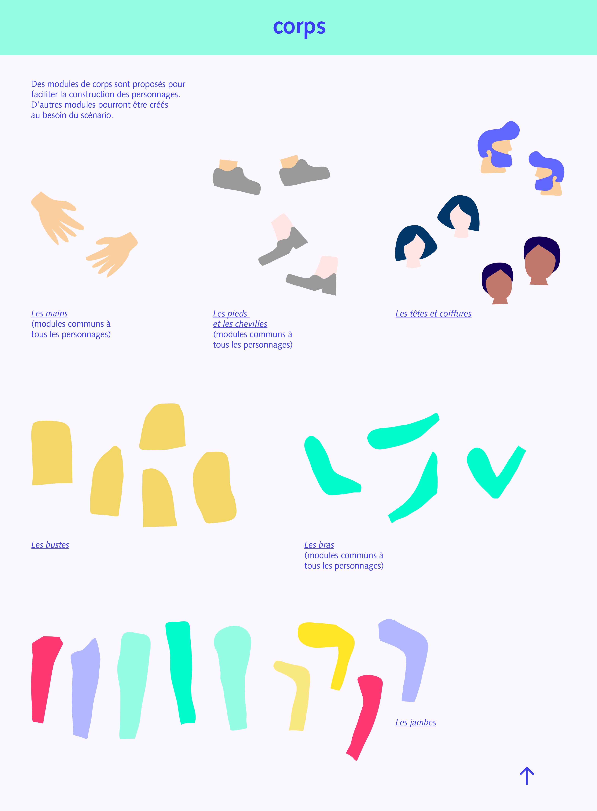
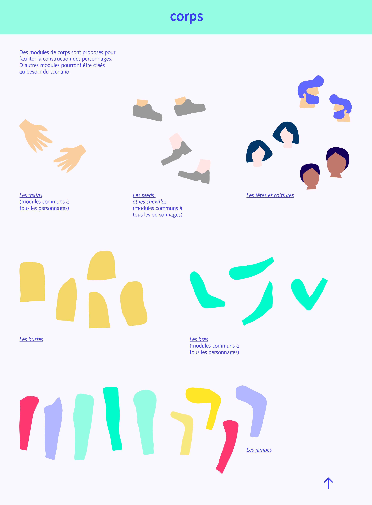

Création de l'application Pro.fil, destinée aux élèves de la 6e
à la Terminale.
Chaque jour, un métier différent est présenté,
sur le ton de la narration, permettant ainsi à l'élève de découvrir
de nombreuses activités professionnelles tout au long de sa scolarité.
Charte graphique de l'application, mise en place de l'univers visuel,
coloriel et typographique.
Affiches publicitaires annonçant la sortie de l'application.
Projet commandité par l'Onisep et le Ministère
de l'Éducation Nationale.
(projet fictif)
Mai 2018

 
